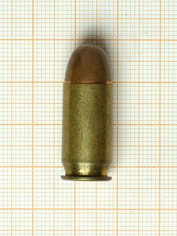

The .45 ACP (Automatic Colt Pistol), also known as .45 Auto, .45 Automatic, or 11.43×23mm[1] is a rimless straight-walled handgun cartridge designed by John Moses Browning in 1904, for use in his prototype Colt semi-automatic pistol. After successful military trials, it was adopted as the standard chambering for Colt's M1911 pistol.[2] The round was developed due to a lack of stopping power experienced[3] in the Moro Rebellion in places like Sulu. The issued ammunition, .38 Long Colt, had proved inadequate, motivating the search for a better cartridge. This experience and the Thompson–LaGarde Tests of 1904 led the Army and the Cavalry to decide that a minimum of .45 caliber was required in a new handgun cartridge.
